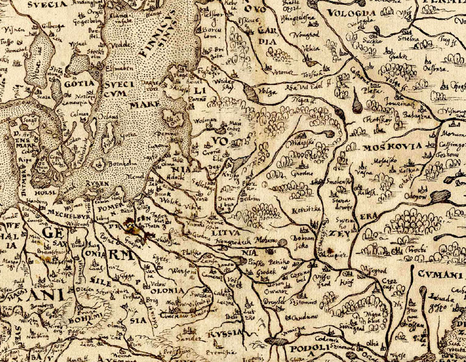
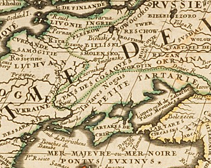
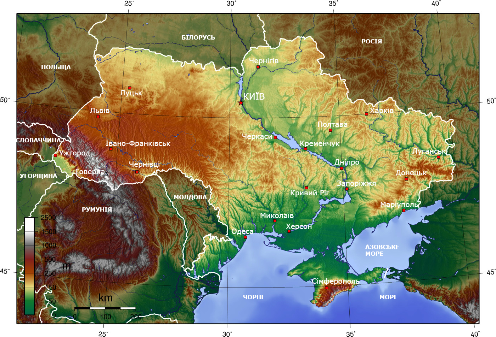
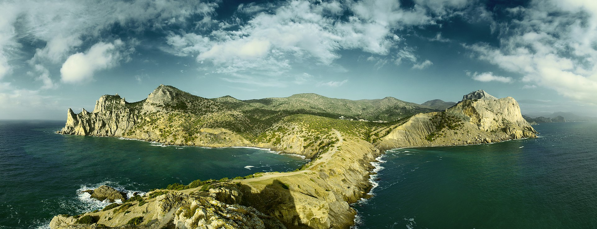
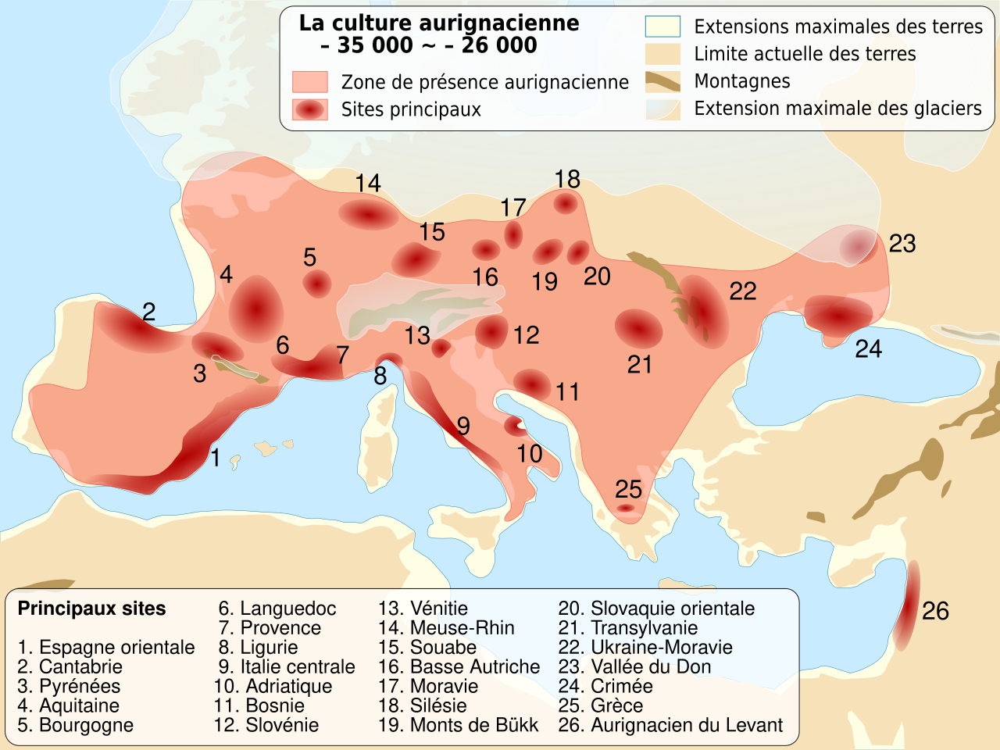

Опис
Украї́на (МФА: [ʊkrɐˈjinɐ]ⓘ) — держава у Східній та частково Центральній Європі. Охоплює південний захід Східноєвропейської рівнини, частину Східних Карпат і Кримські гори. Межує з Румунією й Молдовою на південному заході, з Угорщиною, Словаччиною та Польщею на заході, з Білоруссю на півночі та з Росією на сході й північному сході. На півдні омивається Чорним та Азовським морями. Площа становить 603 700 км²[7]. Найбільша за площею країна серед повністю розташованих у Європі[8].
Станом на перепис 2001 року, населення України становило 48,4 мільйона осіб[9]. Основне й корінне населення України — українці[10][11] (77,8 % населення на 2001 рік[9]). Також офіційно корінними народами України є кримські татари, караїми та кримчаки[12]. Крім того, значною меншиною є росіяни (17,3 % населення на 2001 рік[9]). Історично однією з найбільших меншин в Україні були також українські євреї[13].
Сучасна Україна, обравши за свій герб знак княжої держави Володимира Великого[14], проводить свою державність від Русі київських князів династії Рюриковичів IX—XIII століть[15]. За часів свого розквіту, у X—XI століттях, Русь була однією з найбільших і найвпливовіших країн Європи[15]. Після монгольської навали спадкоємцем Русі стало Королівство Руське XIII—XIV століть[15], що згодом було поглинуте Великим князівством Литовським і Королівством Польським. Велике князівство Литовське стало фактичним продовжувачем традицій Русі, у його складі руські землі користувалися широкою автономією[16][17]. Після об'єднання литовської та польської держав у 1569 році, більшість українських земель перебувала у складі федеративної Речі Посполитої.
Відновлення української державності відбулося під час великого козацького повстання, відомого як Хмельниччина, з 1648 року[15][18], наслідком якого стало утворення автономної козацької держави, Гетьманщини, або Війська Запорозького. Обмежену автономність Гетьманщина зберігала до 1764 року, при тому частина земель відійшла до Речі Посполитої, а інша частина знаходилася під протекторатом Московського царства, які поступово поглинули козацьку державу. Згодом українські землі були розділені між Російською імперією та Австро-Угорською монархією.
Державою кримських татар, одного з корінних народів України[12], був Кримський ханат, що існував на південних українських землях у 1441—1783 роках за правління династії Ґіреїв. У 1783 році був анексований Російською імперією[19][20].
Назва
Україна має декілька історичних назв, що є частково або повністю тотожними. Сучасна Україна розташована на землях, що у перших століттях нашої ери були відомі здебільшого як «Скіфія» та «Сарматія», однак це назва, завіксована у творах іноземних авторів, а етнічна і культурна ідентичність тогочасного населення цих земель переважно не досліджена[25]. Найвідомішими історичними назвами, що стосувалися сукупності земель, на яких відбувався етногенез українського народу та мала місце відносна тяглість його державності[25], були: «Русь», «Росія» («Ρωσία», «Rosia», «Russia»), «Рутенія» («Ruthenia»), «Роксоланія» («Roxolania»)[26], «Україна»[27], «Малоросія», «Військо Запорозьке», «Гетьманщина».
Русь

Найдавніша відома згадка слова «Русь» як географічної назви є у візантійсько-руському договорі 911 року, де вона використана на позначення держави і території підвладної київському князю Олегу (що на той час обмежувалося переважно околицями Києва)[28][29]. Надалі назва «Русь» використовувалася на позначення земель, на які поширювалася влада київських князів, у вузькому значенні лише щодо Середнього Придніпров'я (Київське, Чернігівське, Переяславське князівства), у ширшому — на значну частину Східної Європи, при цьому землі за межами Наддніпрянщини в низці джерел означалися як «Зовнішня Русь»[28][29]. Одночасно у Візантії на означення Русі використовувалося, серед інших назв, еллінізоване слово «Росія» («Ρωσία»)[28][30]. Після занепаду Русі внаслідок монгольської навали, у XIII—XIV століттях назву «Королівство Русь» певний час носила Галицько-Волинська держава[31], протягом 1398—1569 років слово «Русь» використовувалося в повній назві Литовської держави[32] і протягом 1434—1772 років назву «Руське воєводство» носила Галичина у складі Королівства Польського та Речі Посполитої[33]. Московія не претендувала прямо на загальний спадок Русі та не використовувала це слово у назві своєї держави доки Іван IV у 1547 році не почав називати себе, серед інших титулів, «царь и великий князь всеа Русии», після чого до Московії в деяких документах, окрім як «Московське царство», почали застосовуватися також назви «Російське царство» або «Росія»[30]. Закріпив цю назву за Московією Петро I, отримавши контроль над лівобережною Гетьманщиною та Києвом і перейменувавши Московське царство на Російську імперію у 1721 році[30]. До цих подій київські та московські землі не перебували у складі однієї держави протягом близько 500 років у XIII—XVIII століттях. Низка істориків згодом характеризували таке запозичення як безпідставне привласнення Московією назви та історії України-Русі. Серед тих, хто відстоював правомірність використання назви «Русь» лише стосовно України, але не Росії-Московії, був анонімний автор впливової праці початку XIX століття «Історія Русів»[34]. Згодом аналогічну позицію детально обґрунтував Михайло Грушевський, зокрема зазначаючи, що «ми є народ у якого вкрали назву», на підкреслення чого назвав свою найбільшу працю «Історія України-Руси». Поділяє таку думку й багато сучасних дослідників.
Україна

Слов'янське слово «Україна» вперше згадується в Київському літописному зводі за Іпатіївським списком під 1187 роком[38]. Ним окреслювали терени Переяславського князівства, що входило до історичного ядра Русі поруч із Київським і Чернігівським князівствами. Це слово також зустрічається в руських літописах під 1189, 1213, 1280 і 1282 роками[38], позначаючи Галичину, Західну Волинь, Холмщину й Підляшшя. У литовських і польських хроніках та офіційних документах XIV—XVII століття «Україною» в широкому значенні називали руські землі Галичини, Волині, Київщини, Поділля й Брацлавщини, а у вузькому — територію Середнього Подніпров'я[39]. Таке ж двояке значення цього слова зберігалося й із середини XVII століття, після постання руської держави Війська Запорозького[40].

Протягом початку 1670-х — першої половини 1680-х років назва «Україна» закріпилася в офіційному дискурсі Війська Запорозького, Московського царства, Речі Посполитої та Молдавського князівства як новий політонім. Ним почали позначати державу, яка була під владою гетьманів Війська Запорозького. При цьому дана назва була синонімічною і вживалася для кращого розуміння та виокремлення державного політичного утворення, яке постало на теренах Східної Європи від часів Української революції на чолі з гетьманом Богданом Хмельницьким[27].
У зв'язку з входженням частини земель Русі до складу Московського царства, а згодом і Російської імперії, слово «Україна» закріпилося за регіоном Подніпров'я; ним також позначали Слобожанщину. Після перейменування Московського царства на Російську імперію 1721 року, українські землі почали називати «Малоросією». У другій половині XIX століття — початку XX століття, під впливом національного руху руської інтелігенції, назва «Україна» набирала значення руської етнічної території, а сам етнонім «русини» був витіснений етнонімом «українці»[39]. 1917 року була проголошена держава, яка використала слово «Україна» у своїй офіційній назві, — Українська Народна Республіка.
Етимологія слова «Україна» достеменно не відома. Згідно з теорією, якої дотримуються більшість українських дослідників, «Україна» походить від слів «країна» чи «край», тобто «у» означає «рідний», «свій». Таким чином «україна» — антонім слова «чужина»[41][42]. Згідно з іншою теорією, що утворилася під впливом польської та російської історіографії, воно означає «околицю» (рос. окраину) чи «прикордоння».
Географія та природа
Розташування

Україна розташована в південно-східній частині Європи[7]. Вона має спільні сухопутні державні кордони з Білоруссю на півночі, з Польщею на заході, зі Словаччиною, Угорщиною, Румунією і Молдовою на південному заході й із Росією на сході. Південь України омивається Чорним та Азовським морями. Морські кордони вона має з Румунією і Росією.

Загальна площа України становить 603 700 км², вона становить 5,7 % території Європи й 0,44 % території світу. За цим показником вона є другою за величиною серед країн Європи після Росії (або найбільшою країною, яка повністю лежить у Європі). Площа виключної морської економічної зони України становить 72 658 км². Територія України витягнута із заходу на схід на 1316 км і з півночі на південь на 893 км, лежить приблизно між 52° 20′ та 44° 23′ північної широти й 22° 5′ і 41° 15′ східної довготи.
- Крайній північний пункт — село Грем'яч (ур. Петрівське) Чернігівської області.
- Крайній південний пункт — с-ще Форос Автономної Республіки Крим.
- Крайній західний пункт — село Соломоново Закарпатської області.
- Крайній східний пункт — село Рання Зоря Луганської області.
- Географічний центр України розташований на північній околиці села Мар'янівка Звенигородського району Черкаської області[43].
- Згідно з однією з методик вимірювання[44], географічний центр Європи розташований на території України, неподалік міста Рахів Закарпатської області.
Історія
Доісторичний період (від палеоліту до бронзової доби)

В Україні знаходиться найдавніша відома стоянка доісторичних людей у Європі (людина прямоходяча, Homo erectus), поблизу села Королево на Закарпатті, що була датована у 1,4 мільйони років (ранній палеоліт), і вважається осередком міграції давніх людей з Кавказу.
Щонайменше з кінця раннього палеоліту (близько 300 тисяч років тому), та протягом усього середнього палеоліту, більшу частину земель нинішньої України населяли неандертальці (Homo neanderthalensis). Особливо добре відомі стоянки неандертальців у Криму, який імовірно був одним з останніх рефугіумів цього виду людини, до близько 28 тисяч років тому.
Близько 40 тисяч років тому Європу, зокрема терени нинішньої України, у кілька міграційних хвиль заселили з середземноморського узбережжя Близького Сходу анатомічно сучасні люди, Homo sapiens, що були мисливцями-збирачами (кроманьйонці). Вони витіснили неандертальців, частково їх асимілювавши (відсоток ДНК неандертальців у геномі сучасної людини в Європі поступово скоротився з 3—6 % до сучасних 2 %), хоча кілька тисяч років два види людей співіснували, особливо довго в Криму[79]. Перші сучасні люди в Європі, зокрема на значній частині України, представлені Оріньяцькою археологічною культурою, яку згодом замінили Граветська та Епіграветська культури (до близько 8 тисяч років тому), носії яких продовжували бути мисливцями-збирачами. Завдяки сучасним генетичним дослідженням людських решток зазначених культур встановлено, що їхні представники (віком починаючи принаймні від 38 тисяч років) є одними з пращурів сучасних європейців, зокрема українців.